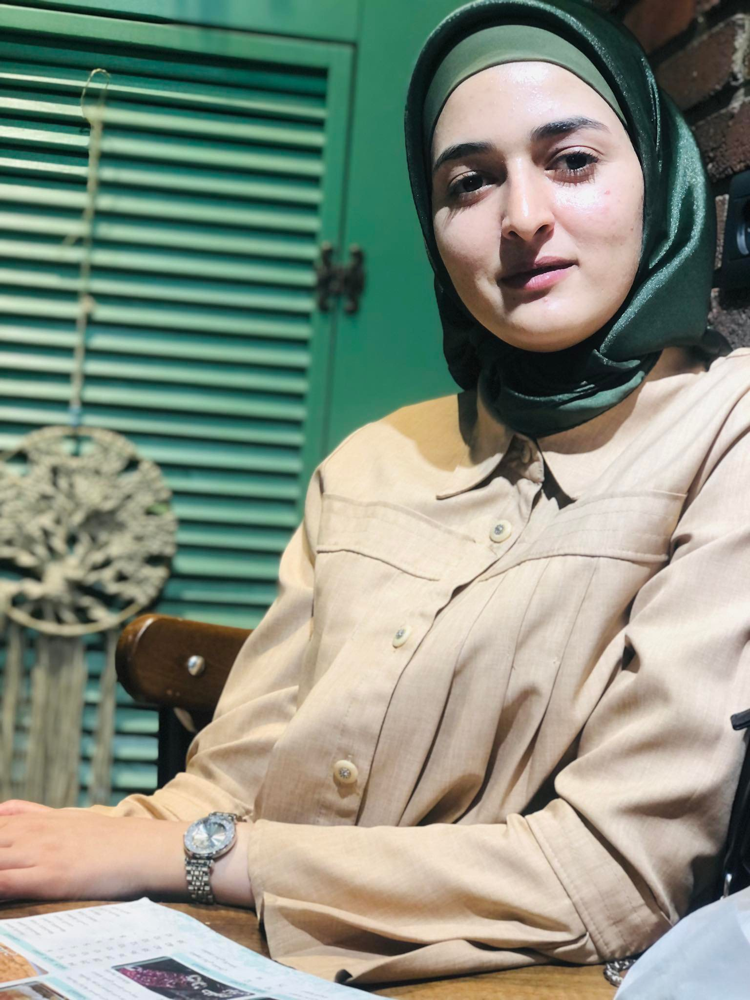

+970594522390
omama.kitt2000@gmail.com
omama.kitt2000@gmail.com
Hi, i'm
omama kittaneh
omama kittaneh
Software Engineer


I am flexible, and reliable and possess
excellent
time-keeping skills. I am enthusiastic, self-motivated,
reliable, responsible, and hardworking. I am a mature
team worker and adaptable to all challenging situations.
I am able to work well both in a team environment.
time-keeping skills. I am enthusiastic, self-motivated,
reliable, responsible, and hardworking. I am a mature
team worker and adaptable to all challenging situations.
I am able to work well both in a team environment.
EXPERIENCE
2023
Software Engineer -
Qudra company
Programming a website for a Qudra company
to calculate the amount of energy using the
following languages Javascript,HTML,CSS and
python.
to calculate the amount of energy using the
following languages Javascript,HTML,CSS and
python.
EDUCATION
2023-2018
An-Najah National University
Bachelor of Computer Systems
Engineering.
2018
Certificate of secondary education -
Scientific.